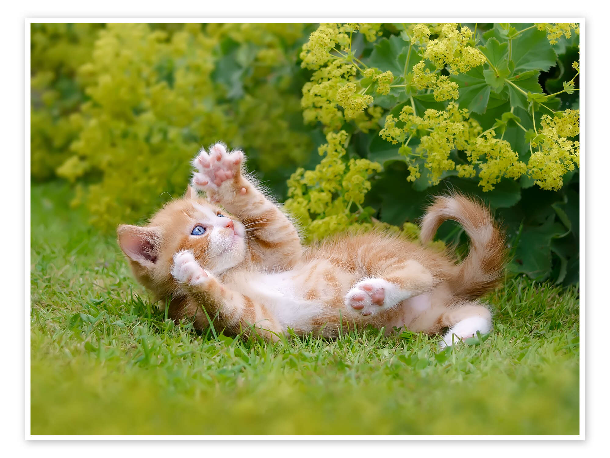
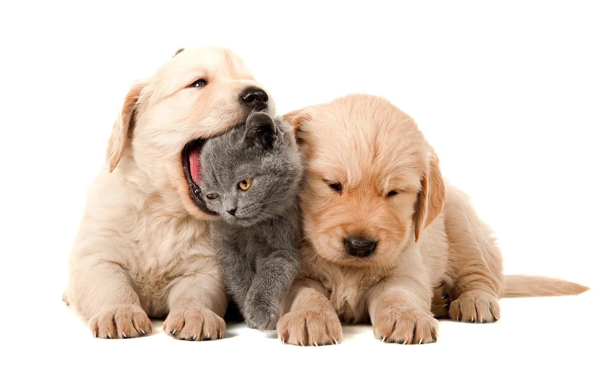

Welcome to Paw-sitive Pet Service
Your new furry friend is waiting for you!
About Us
At Paw-sitive Change, we are dedicated to finding loving homes for pets in need. Our mission is to rescue, rehabilitate, and rehome animals who have been abandoned, neglected, or abused.
Our team of volunteers is passionate about animal welfare and is here to help you find the perfect companion and guide you through the adoption process.


